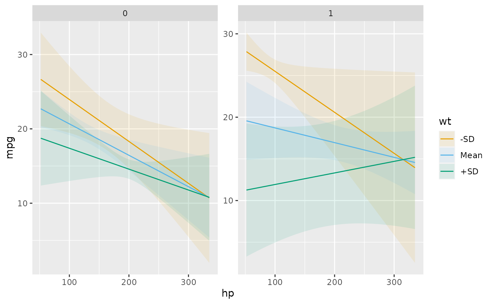
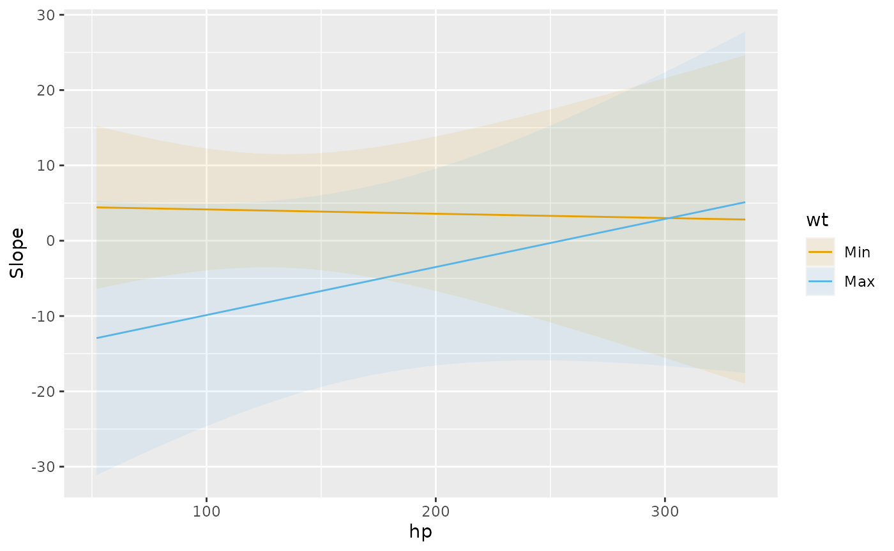

Installation
Install the latest CRAN release:
install.packages("marginaleffects")Install the development version:
install.packages(
c("marginaleffects", "insight"),
repos = c("https://vincentarelbundock.r-universe.dev", "https://easystats.r-universe.dev"))Restart R completely before moving on.
Estimands: Predictions, Comparisons, and Slopes
The marginaleffects package allows R users
to compute and plot three principal quantities of interest: (1)
predictions, (2) comparisons, and (3) slopes. In addition, the package
includes a convenience function to compute a fourth estimand, “marginal
means”, which is a special case of averaged predictions.
marginaleffects can also average (or “marginalize”)
unit-level (or “conditional”) estimates of all those quantities, and
conduct hypothesis tests on them.
The outcome predicted by a fitted model on a specified scale for a given combination of values of the predictor variables, such as their observed values, their means, or factor levels. a.k.a. Fitted values, adjusted predictions.
predictions(),avg_predictions(),plot_predictions().
Compare the predictions made by a model for different regressor values (e.g., college graduates vs. others): contrasts, differences, risk ratios, odds, etc.
comparisons(),avg_comparisons(),plot_comparisons().
Partial derivative of the regression equation with respect to a regressor of interest. a.k.a. Marginal effects, trends.
slopes(),avg_slopes(),plot_slopes().
Predictions of a model, averaged across a “reference grid” of categorical predictors.
marginalmeans().
Predictions, comparisons, and slopes are fundamentally unit-level (or “conditional”) quantities. Except in the simplest linear case, estimates will typically vary based on the values of all the regressors in a model. Each of the observations in a dataset is thus associated with its own prediction, comparison, and slope estimates. Below, we will see that it can be useful to marginalize (or “average over”) unit-level estimates to report an “average prediction”, “average comparison”, or “average slope”.
One ambiguous aspect of the definitions above is that the word “marginal” comes up in two different and opposite ways:
- In “marginal effects,” we refer to the effect of a tiny (marginal) change in the regressor on the outcome. This is a slope, or derivative.
- In “marginal means,” we refer to the process of marginalizing across rows of a prediction grid. This is an average, or integral.
On this website and in this package, we reserve the expression “marginal effect” to mean a “slope” or “partial derivative”.
The marginaleffects package includes functions to
estimate, average, plot, and summarize all of the estimands described
above. The objects produced by marginaleffects are “tidy”:
they produce simple data frames in “long” format. They are also
“standards-compliant” and work seamlessly with standard functions like
summary(), head(), tidy(), and
glance(), as well with external
packages like modelsummary or ggplot2.
We now apply marginaleffects functions to compute each
of the estimands described above. First, we fit a linear regression
model with multiplicative interactions:
library(marginaleffects)
mod <- lm(mpg ~ hp * wt * am, data = mtcars)Then, we call the predictions() function. As noted
above, predictions are unit-level estimates, so there is one specific
prediction per observation. By default, the predictions()
function makes one prediction per observation in the dataset that was
used to fit the original model. Since mtcars has 32 rows,
the predictions() outcome also has 32 rows:
pre <- predictions(mod)
nrow(mtcars)## [1] 32
nrow(pre)## [1] 32
pre##
## Estimate Std. Error z Pr(>|z|) 2.5 % 97.5 %
## 22 0.88 25.4 <0.001 20.8 24
## 21 1.19 17.4 <0.001 18.5 23
## 25 0.71 35.7 <0.001 23.9 27
## 20 0.70 28.8 <0.001 18.9 22
## 17 0.71 23.9 <0.001 15.6 18
## --- 22 rows omitted. See ?avg_predictions and ?print.marginaleffects ---
## Estimate Std. Error z Pr(>|z|) 2.5 % 97.5 %
## 30 1.87 15.8 <0.001 25.9 33
## 16 1.31 12.1 <0.001 13.3 18
## 19 1.15 16.9 <0.001 17.2 22
## 15 2.02 7.3 <0.001 10.8 19
## 21 1.07 20.0 <0.001 19.4 24
##
## Prediction type: response
## Columns: rowid, type, estimate, std.error, statistic, p.value, conf.low, conf.high, mpg, hp, wt, amNow, we use the comparisons() function to compute the
difference in predicted outcome when each of the predictors is
incremented by 1 unit (one predictor at a time, holding all others
constant). Once again, comparisons are unit-level quantities. And since
there are 3 predictors in the model and our data has 32 rows, we obtain
96 comparisons:
cmp <- comparisons(mod)
nrow(cmp)## [1] 96
cmp##
## Term Contrast Estimate Std. Error z Pr(>|z|) 2.5 % 97.5 %
## hp +1 -0.0369 0.019 -1.99 0.0461 -0.073 -0.00064
## hp +1 -0.0287 0.016 -1.84 0.0664 -0.059 0.00194
## hp +1 -0.0466 0.023 -2.06 0.0392 -0.091 -0.00230
## hp +1 -0.0423 0.013 -3.18 0.0015 -0.068 -0.01624
## hp +1 -0.0390 0.013 -2.91 0.0036 -0.065 -0.01273
## --- 86 rows omitted. See ?avg_comparisons and ?print.marginaleffects ---
## Term Contrast Estimate Std. Error z Pr(>|z|) 2.5 % 97.5 %
## am 1 - 0 4.0807 3.935 1.04 0.2997 -3.632 11.79339
## am 1 - 0 2.1064 2.289 0.92 0.3575 -2.380 6.59310
## am 1 - 0 0.8951 1.644 0.54 0.5862 -2.327 4.11762
## am 1 - 0 4.0272 3.240 1.24 0.2139 -2.324 10.37797
## am 1 - 0 -0.2369 1.586 -0.15 0.8813 -3.346 2.87242
##
## Prediction type: response
## Columns: rowid, type, term, contrast, estimate, std.error, statistic, p.value, conf.low, conf.high, predicted, predicted_hi, predicted_lo, mpg, hp, wt, am, epsThe comparisons() function allows customized queries.
For example, what happens to the predicted outcome when the
hp variable increases from 100 to 120?
comparisons(mod, variables = list(hp = c(120, 100)))##
## Term Contrast Estimate Std. Error z Pr(>|z|) 2.5 % 97.5 %
## hp 120 - 100 -0.74 0.37 -1.99 0.0461 -1.46 -0.0129
## hp 120 - 100 -0.57 0.31 -1.84 0.0664 -1.19 0.0388
## hp 120 - 100 -0.93 0.45 -2.06 0.0392 -1.82 -0.0460
## hp 120 - 100 -0.85 0.27 -3.18 0.0015 -1.37 -0.3248
## hp 120 - 100 -0.78 0.27 -2.91 0.0036 -1.31 -0.2547
## --- 22 rows omitted. See ?avg_comparisons and ?print.marginaleffects ---
## Term Contrast Estimate Std. Error z Pr(>|z|) 2.5 % 97.5 %
## hp 120 - 100 -1.45 0.71 -2.06 0.0396 -2.83 -0.0692
## hp 120 - 100 -0.38 0.27 -1.42 0.1550 -0.91 0.1451
## hp 120 - 100 -0.64 0.33 -1.92 0.0551 -1.30 0.0141
## hp 120 - 100 -0.13 0.27 -0.46 0.6436 -0.66 0.4075
## hp 120 - 100 -0.64 0.33 -1.91 0.0560 -1.29 0.0162
##
## Prediction type: response
## Columns: rowid, type, term, contrast, estimate, std.error, statistic, p.value, conf.low, conf.high, predicted, predicted_hi, predicted_lo, mpg, hp, wt, am, epsWhat happens to the predicted outcome when the wt
variable increases by 1 standard deviation about its mean?
comparisons(mod, variables = list(hp = "sd"))##
## Term Contrast Estimate Std. Error z Pr(>|z|) 2.5 % 97.5 %
## hp (x + sd/2) - (x - sd/2) -2.53 1.27 -1.99 0.0461 -5.0 -0.044
## hp (x + sd/2) - (x - sd/2) -1.97 1.07 -1.84 0.0664 -4.1 0.133
## hp (x + sd/2) - (x - sd/2) -3.19 1.55 -2.06 0.0392 -6.2 -0.158
## hp (x + sd/2) - (x - sd/2) -2.90 0.91 -3.18 0.0015 -4.7 -1.113
## hp (x + sd/2) - (x - sd/2) -2.68 0.92 -2.91 0.0036 -4.5 -0.873
## --- 22 rows omitted. See ?avg_comparisons and ?print.marginaleffects ---
## Term Contrast Estimate Std. Error z Pr(>|z|) 2.5 % 97.5 %
## hp (x + sd/2) - (x - sd/2) -4.98 2.42 -2.06 0.0396 -9.7 -0.237
## hp (x + sd/2) - (x - sd/2) -1.32 0.92 -1.42 0.1550 -3.1 0.497
## hp (x + sd/2) - (x - sd/2) -2.20 1.15 -1.92 0.0551 -4.4 0.048
## hp (x + sd/2) - (x - sd/2) -0.43 0.93 -0.46 0.6436 -2.3 1.397
## hp (x + sd/2) - (x - sd/2) -2.18 1.14 -1.91 0.0560 -4.4 0.056
##
## Prediction type: response
## Columns: rowid, type, term, contrast, estimate, std.error, statistic, p.value, conf.low, conf.high, predicted, predicted_hi, predicted_lo, mpg, hp, wt, am, epsThe comparisons() function also allows users to specify
arbitrary functions of predictions, with the transform_pre
argument. For example, what is the average ratio between predicted Miles
per Gallon after an increase of 50 units in Horsepower?
comparisons(
mod,
variables = list(hp = 50),
transform_pre = "ratioavg")##
## Term Contrast Estimate Std. Error z Pr(>|z|) 2.5 % 97.5 %
## hp mean(+50) 0.91 0.029 31 <0.001 0.85 0.97
##
## Prediction type: response
## Columns: type, term, contrast, estimate, std.error, statistic, p.value, conf.low, conf.high, predicted, predicted_hi, predicted_loSee the Comparisons vignette for detailed explanations and more options.
The slopes() function allows us to compute the partial
derivative of the outcome equation with respect to each of the
predictors. Once again, we obtain a data frame with 96 rows:
## [1] 96
mfx##
## Term Contrast Estimate Std. Error z Pr(>|z|) 2.5 % 97.5 %
## hp dY/dX -0.0369 0.019 -1.99 0.0461 -0.073 -0.00064
## hp dY/dX -0.0287 0.016 -1.84 0.0664 -0.059 0.00194
## hp dY/dX -0.0466 0.023 -2.06 0.0392 -0.091 -0.00230
## hp dY/dX -0.0423 0.013 -3.18 0.0015 -0.068 -0.01624
## hp dY/dX -0.0390 0.013 -2.91 0.0036 -0.065 -0.01273
## --- 86 rows omitted. See ?avg_slopes and ?print.marginaleffects ---
## Term Contrast Estimate Std. Error z Pr(>|z|) 2.5 % 97.5 %
## am 1 - 0 4.0807 3.935 1.04 0.2997 -3.632 11.79339
## am 1 - 0 2.1064 2.289 0.92 0.3575 -2.380 6.59310
## am 1 - 0 0.8951 1.644 0.54 0.5862 -2.327 4.11762
## am 1 - 0 4.0272 3.240 1.24 0.2139 -2.324 10.37797
## am 1 - 0 -0.2369 1.586 -0.15 0.8813 -3.346 2.87242
##
## Prediction type: response
## Columns: rowid, type, term, contrast, estimate, std.error, statistic, p.value, conf.low, conf.high, predicted, predicted_hi, predicted_lo, mpg, hp, wt, am, epsGrid
Predictions, comparisons, and slopes are typically “conditional”
quantities which depend on the values of all the predictors in the
model. By default, marginaleffects functions estimate
quantities of interest for the empirical distribution of the data (i.e.,
for each row of the original dataset). However, users can specify the
exact values of the predictors they want to investigate by using the
newdata argument.
newdata accepts data frames, shortcut strings, or a call
to the datagrid() function. For example, to compute the
predicted outcome for a hypothetical car with all predictors equal to
the sample mean or median, we can do:
predictions(mod, newdata = "mean")##
## Estimate Std. Error z Pr(>|z|) 2.5 % 97.5 % hp wt am
## 18 0.68 27 <0.001 17 20 146.6875 3.21725 0.40625
##
## Prediction type: response
## Columns: rowid, type, estimate, std.error, statistic, p.value, conf.low, conf.high, mpg, hp, wt, am
predictions(mod, newdata = "median")##
## Estimate Std. Error z Pr(>|z|) 2.5 % 97.5 % hp wt am
## 19 0.82 23 <0.001 17 20 123 3.325 0.40625
##
## Prediction type: response
## Columns: rowid, type, estimate, std.error, statistic, p.value, conf.low, conf.high, mpg, hp, wt, amThe datagrid
function gives us a powerful way to define a grid of predictors. All
the variables not mentioned explicitly in datagrid() are
fixed to their mean or mode:
predictions(
mod,
newdata = datagrid(
am = c(0, 1),
wt = range))##
## Estimate Std. Error z Pr(>|z|) 2.5 % 97.5 % hp am wt
## 23.3 2.7 8.6 <0.001 18.0 29 146.6875 0 1.513
## 12.8 3.0 4.3 <0.001 7.0 19 146.6875 0 5.424
## 27.1 2.9 9.5 <0.001 21.6 33 146.6875 1 1.513
## 5.9 5.8 1.0 0.31 -5.5 17 146.6875 1 5.424
##
## Prediction type: response
## Columns: rowid, type, estimate, std.error, statistic, p.value, conf.low, conf.high, mpg, hp, am, wtThe same mechanism is available in comparisons() and
slopes(). To estimate the partial derivative of
mpg with respect to wt, when am
is equal to 0 and 1, while other predictors are held at their means:
##
## Term Estimate Std. Error z Pr(>|z|) 2.5 % 97.5 % hp wt am
## wt -2.7 1.4 -1.9 0.059 -5.5 0.11 146.6875 3.21725 0
## wt -5.4 2.2 -2.5 0.012 -9.7 -1.21 146.6875 3.21725 1
##
## Prediction type: response
## Columns: rowid, type, term, estimate, std.error, statistic, p.value, conf.low, conf.high, predicted, predicted_hi, predicted_lo, mpg, hp, wt, am, epsWe can also plot how predictions, comparisons, or slopes change across different values of the predictors using three powerful plotting functions:
-
plot_predictions: Conditional Adjusted Predictions -
plot_comparisons: Conditional Comparisons -
plot_slopes: Conditional Marginal Effects
For example, this plot shows the outcomes predicted by our model for
different values of the wt and am
variables:
plot_predictions(mod, condition = list("hp", "wt" = "threenum", "am"))
This plot shows how the derivative of mpg with respect
to am varies as a function of wt and
hp:
plot_slopes(mod, variables = "am", condition = list("hp", "wt" = "minmax"))
See this vignette for more information: Plots, interactions, predictions, contrasts, and slopes
Averaging
Since predictions, comparisons, and slopes are conditional quantities, they can be a bit unwieldy. Often, it can be useful to report a one-number summary instead of one estimate per observation. Instead of presenting “conditional” estimates, some methodologists recommend reporting “marginal” estimates, that is, an average of unit-level estimates.
(This use of the word “marginal” as “averaging” should not be confused with the term “marginal effect” which, in the econometrics tradition, corresponds to a partial derivative, or the effect of a “small/marginal” change.)
To marginalize (average over) our unit-level estimates, we can use
the by argument or the one of the convenience functions:
avg_predictions(), avg_comparisons(), or
avg_slopes(). For example, both of these commands give us
the same result: the average predicted outcome in the
mtcars dataset:
avg_predictions(mod)##
## Estimate Std. Error z Pr(>|z|) 2.5 % 97.5 %
## 20 0.39 51 <0.001 19 21
##
## Prediction type: response
## Columns: type, estimate, std.error, statistic, p.value, conf.low, conf.highThis is equivalent to manual computation by:
## [1] 20.09062The main marginaleffects functions all include a
by argument, which allows us to marginalize within
sub-groups of the data. For example,
avg_comparisons(mod, by = "am")##
## Term Contrast am Estimate Std. Error z Pr(>|z|) 2.5 % 97.5 %
## am mean(1) - mean(0) 0 -1.383 2.525 -0.55 0.5839 -6.332 3.5659
## am mean(1) - mean(0) 1 1.903 2.309 0.82 0.4098 -2.622 6.4277
## hp mean(+1) 0 -0.034 0.016 -2.16 0.0308 -0.065 -0.0032
## hp mean(+1) 1 -0.044 0.021 -2.05 0.0404 -0.085 -0.0019
## wt mean(+1) 0 -2.480 1.232 -2.01 0.0441 -4.894 -0.0660
## wt mean(+1) 1 -6.072 1.976 -3.07 0.0021 -9.945 -2.1985
##
## Prediction type: response
## Columns: type, term, contrast, am, estimate, std.error, statistic, p.value, conf.low, conf.high, predicted, predicted_hi, predicted_loMarginal Means are a special case of predictions, which are marginalized (or averaged) across a balanced grid of categorical predictors. To illustrate, we estimate a new model with categorical predictors:
dat <- mtcars
dat$am <- as.logical(dat$am)
dat$cyl <- as.factor(dat$cyl)
mod_cat <- lm(mpg ~ am + cyl + hp, data = dat)We can compute marginal means manually using the functions already described:
avg_predictions(
mod_cat,
newdata = datagrid(cyl = unique, am = unique),
by = "am")##
## am Estimate Std. Error z Pr(>|z|) 2.5 % 97.5 %
## FALSE 18 0.79 23 <0.001 17 20
## TRUE 22 0.83 27 <0.001 21 24
##
## Prediction type: response
## Columns: type, am, estimate, std.error, statistic, p.value, conf.low, conf.highFor convenience, the marginaleffects package also
includes a marginal_means() function:
marginal_means(mod_cat, variables = "am")##
## Term Value Mean Std. Error z Pr(>|z|) 2.5 % 97.5 %
## am FALSE 18 0.79 23 <0.001 17 20
## am TRUE 22 0.83 27 <0.001 21 24
##
## Prediction type: response
## Results averaged over levels of: cyl, am
## Columns: type, term, value, am, estimate, std.error, statistic, p.value, conf.low, conf.highThe Marginal Means vignette offers more detail.
Hypothesis and equivalence tests
The hypotheses() function and the
hypothesis argument can be used to conduct linear and
non-linear hypothesis tests on model coefficients, or on any of the
quantities computed by the functions introduced above.
Consider this model:
## (Intercept) qsec drat qsec:drat
## 12.3371987 -1.0241183 -3.4371461 0.5973153Can we reject the null hypothesis that the drat
coefficient is 2 times the size of the qsec
coefficient?
hypotheses(mod, "drat = 2 * qsec")##
## Term Estimate Std. Error z Pr(>|z|) 2.5 % 97.5 %
## drat = 2 * qsec -1.4 11 -0.13 0.9 -23 20
##
## Prediction type:
## Columns: term, estimate, std.error, statistic, p.value, conf.low, conf.highWe can ask the same question but refer to parameters by position,
with indices b1, b2, b3,
etc.:
hypotheses(mod, "b3 = 2 * b2")##
## Term Estimate Std. Error z Pr(>|z|) 2.5 % 97.5 %
## b3 = 2 * b2 -1.4 11 -0.13 0.9 -23 20
##
## Prediction type:
## Columns: term, estimate, std.error, statistic, p.value, conf.low, conf.highThe main functions in marginaleffects all have a
hypothesis argument, which means that we can do complex
model testing. For example, consider two slope estimates:
##
## Term Estimate Std. Error z Pr(>|z|) 2.5 % 97.5 % drat qsec
## drat 5.2 3.8 1.4 0.168 -2.21 13 3.596563 14.5
## drat 10.2 5.2 2.0 0.047 0.13 20 3.596563 22.9
##
## Prediction type: response
## Columns: rowid, type, term, estimate, std.error, statistic, p.value, conf.low, conf.high, predicted, predicted_hi, predicted_lo, mpg, drat, qsec, epsAre these two slopes significantly different from one another? To
test this, we can use the hypothesis argument:
##
## Term Estimate Std. Error z Pr(>|z|) 2.5 % 97.5 %
## b1=b2 -5 8.5 -0.59 0.56 -22 12
##
## Prediction type: response
## Columns: type, term, estimate, std.error, statistic, p.value, conf.low, conf.highNow, imagine that for theoretical (or substantive or clinical)
reasons, we only care about slopes larger than 2. We can use the
hypotheses() function to conduct an equivalence test:
avg_slopes(mod) |> hypotheses(equivalence = c(-2, 2))##
## Term Estimate Std. Error z Pr(>|z|) 2.5 % 97.5 % p (NonInf) p (NonSup) p (Equiv)
## drat 7.2 1.37 5.3 <0.001 4.55 9.9 <0.001 1.000 1.000
## qsec 1.1 0.43 2.6 0.0094 0.28 2.0 <0.001 0.022 0.022
##
## Prediction type: response
## Columns: type, term, estimate, std.error, statistic, p.value, conf.low, conf.high, statistic.noninf, statistic.nonsup, p.value.noninf, p.value.nonsup, p.value.equivSee the Hypothesis Tests and Custom Contrasts vignette for background, details, and for instructions on how to conduct hypothesis tests in more complex situations.
More!
There is much more you can do with
marginaleffects. Return to the Table
of Contents to read the vignettes, learn how to report marginal
effects in nice tables
with the modelsummary package, how to define your own
prediction “grid”, and much more. ****